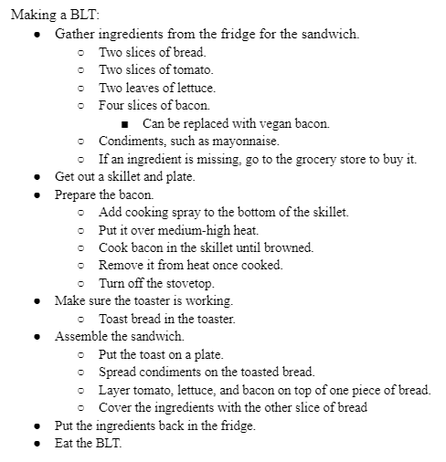

Lab 4 - Pseudocoding and Problem-Solving
Challenge
The challenge of this lab was to create a pseudocode of an everyday task and of a computer game. We has to do each in detail with sub sections.
Problems
The main problem that was had was figuring out how detailed to make the pseudocode whithout actually just coding it. As someone who already knows how to code, I found it difficult to process the pseudocode as something different than regular code.
Results
// index.js - Checkers Game
// A pseudocode implementation of the game
// Author: Faith Smith
// Date: 4/24/2023
//Checkers:
// Before the first turn, determine the starting turn between the player and the computer.
// User = player 1
// Computer = player 2
// Assign Y to whoever goes first
// Assign X to second mover
// Print the initial board.
// X = white
// Y = Black
// O = Empty
// print 8 rows and 8 columns
// loop throough each row
// loop through each space
// print x, o alternatively in rows 1,2,3
// print o in rows 4, 5
// print y, o alternatively in rows 6,7,8
// print | in between cells
// print horizonatal line in between rows
// define move function
// Implement code to make move on board
// define valid move
// check board spaces to see if move is valid
// define computer Intelligence
// Check all possible moves
// analyze optimal paths to win
// define Kinging
// If the X or Y reaches the opposite side of the board, king the piece.
// X,Y = K
// K can move back and forth
// Set up the game loop:
// Print board
// On the player’s turn:
// Take user input that correlates to available moves on the board.
// Check if valid move
// if move valid update board
// if move not valid ask for new input
// If a computer piece is jumped over
// remove that piece from the board.
// Update board
// end player turn
// On the computer’s turn:
// Gather data on all possible moves.
// If there’s an available checker to jump, move that piece over it.
// Remove that piece from the board.
// Update board
// Otherwise, randomly move a piece.
// Update board
// end computer turn
// The game ends when either side runs out of checkers or one cannot have any available moves.
// End Game Loop
Screenshots
A screenshot of the pseudocode of how to make a BLT.

A screenshot of the beginning pseudocode of how to make a checkers game in Javascript.